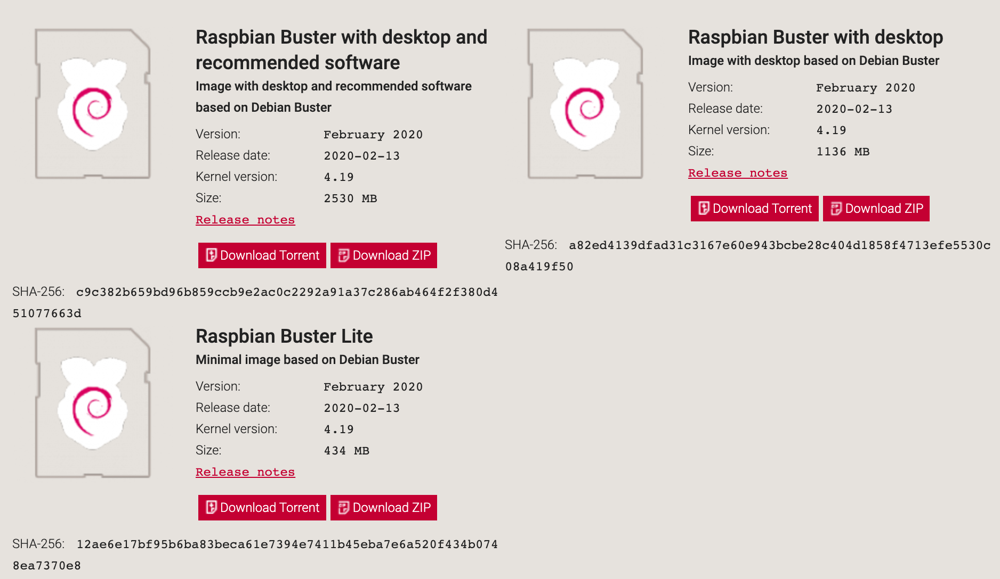
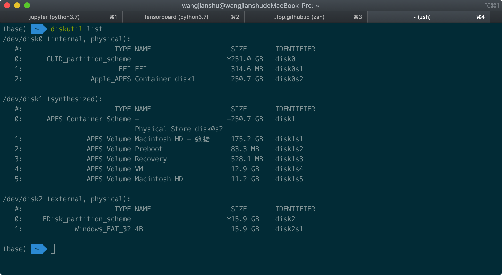
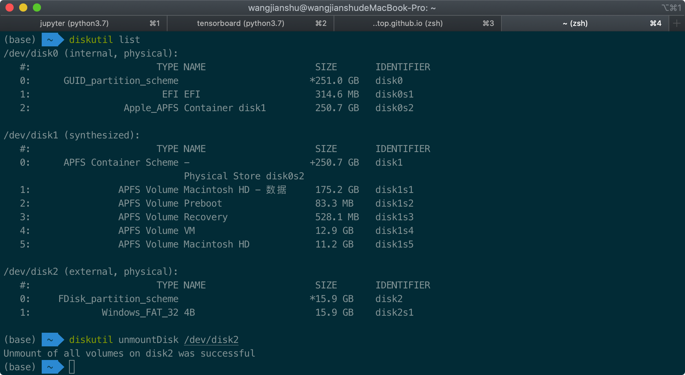
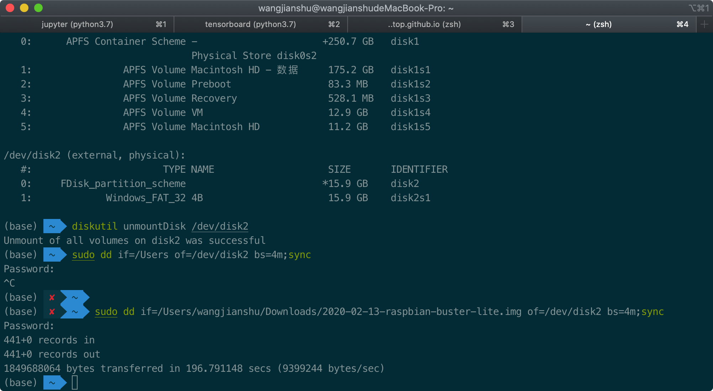

此篇博文用于记录在MacOS系统上为TF卡烧录树莓派操作系统。
下载镜像
网址：https://www.raspberrypi.org/downloads/

我试验下来，上图中的Raspberry Pi Imager for macOS并不好用。因此，我们点左下角的Raspbian图片下载镜像。

这边目前有三种版本：
- 系统+桌面+推荐软件
- 系统+桌面
- 系统
我选择了最简洁的Raspbian Buster Lite，下载.zip并解压出其中的.img文件。
TF卡格式化
首先需要下载格式化工具，我这边使用的是SD Memory Card Formatter，这个软件在windows和macos上都可以用。这里是macos下的下载链接：https://www.sdcard.org/downloads/formatter/eula_mac/index.html

格式化
- 插入
TF卡 - 打开
SD Memory Card Formatter

注意不要格式化错了卡，假如你插入了多个TF卡。上图中的Volume label是格式化后磁盘的命名。

开始烧录
查看驱动器列表
在控制台输入命令：diskutil list

这里，我们获取到TF卡的磁盘路径为/dev/disk2
取消TF卡的挂载
在控制台输入命令：diskutil unmountDisk + SD卡设备路径

开始烧录
在控制台输入命令：sudo dd if=镜像路径 of=SD卡设备的路径 bs=1m;sync，并输入管理员密码。
注意：文件路径不要出现中文。可以将bs=1m改为bs=4m加快烧录的速度。
这个时间有点长，需要耐心等待，400M的镜像大概耗时2分钟左右。

编写树莓派的ssh配置与wifi配置文件
新建两个.txt文件，分别命名为：
- ssh
- wpa_supplicant.conf
注意，取消.txt后缀。
ssh文件为空即可，wpa_supplicant.conf文件中写入：
1 | country=CN |
然后将这两个文件移动至烧录系统镜像后TF卡的根目录。
这里有两个坑点：
- SSID名字中不能有符号
. - 优先级范围为1-10
推出TF卡
diskutil eject SD卡设备路径